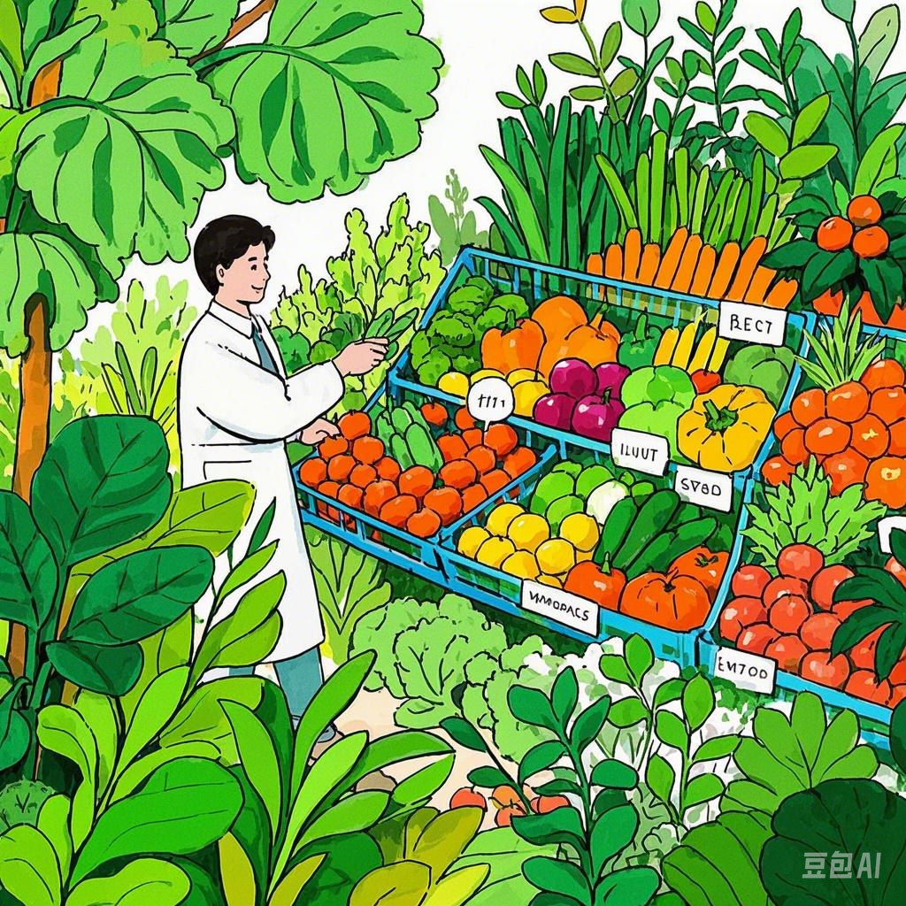

- 需求收集：通过线上平台、电话、线下门店等渠道与客户沟通，了解客户对有机蔬菜的品种、数量、配送频率、配送时间、预算等方面的具体需求。例如，有的客户可能希望每周收到两次包含 5 种不同有机蔬菜的定制套餐，且对蔬菜的产地有特定要求。
- 方案制定：根据客户需求，为客户量身定制专属的有机蔬菜供应方案。方案可能包括不同季节的蔬菜搭配建议，如夏季提供西红柿、黄瓜、茄子等，冬季提供白菜、萝卜、菠菜等，同时提供不同价格档次的套餐供客户选择。
- 售后服务：为客户提供售后服务，解答客户在使用过程中遇到的问题，如蔬菜的保存方法、烹饪建议等。如果客户对收到的有机蔬菜有任何质量问题或不满意的地方，及时为客户处理，如退换货、补偿等。
- 客户反馈收集：定期收集客户的反馈意见，了解客户对有机蔬菜品质、配送服务、定制方案等方面的满意度和改进建议，以便不断优化服务和产品质量。例如，通过在线问卷调查、电话回访等方式收集客户反馈。
- 会员管理与增值服务：建立会员体系，为会员提供积分、优惠活动、专属服务等，增加客户粘性和忠诚度。例如，会员可以享受积分兑换有机蔬菜、生日优惠、优先购买新品等特权，还可以为会员提供有机农业知识讲座、农场参观体验等增值服务。

返回